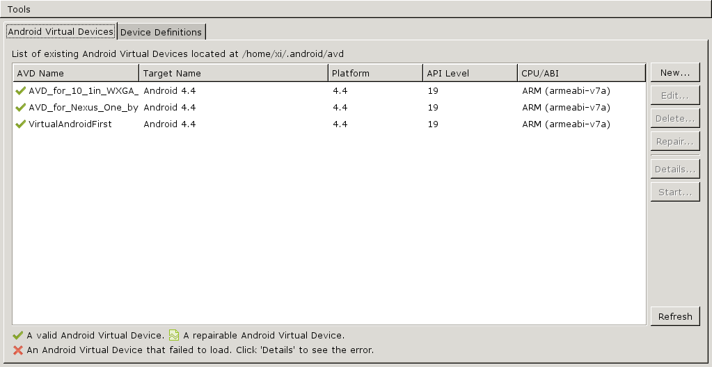
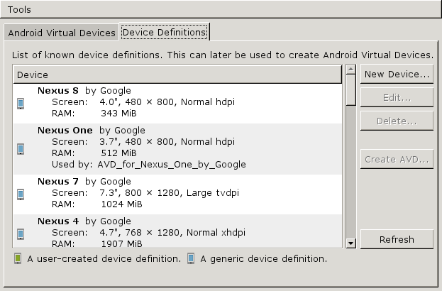
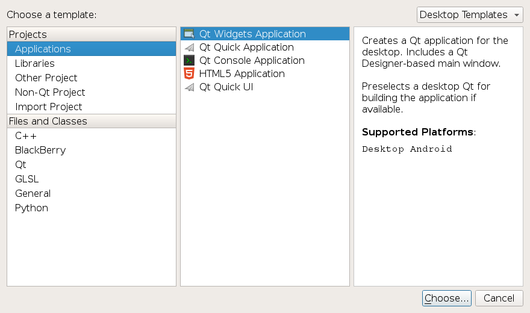
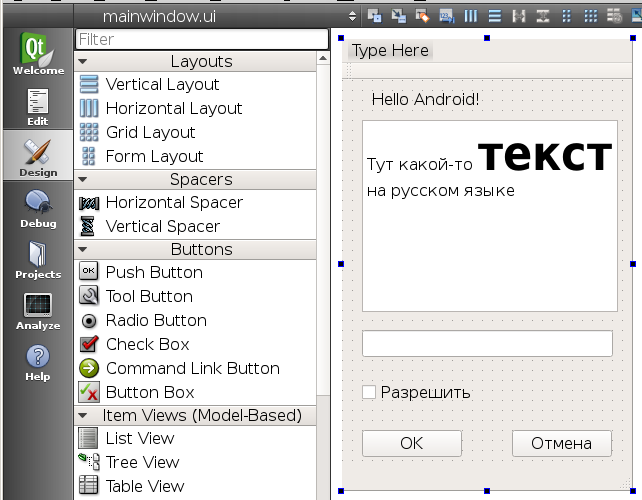
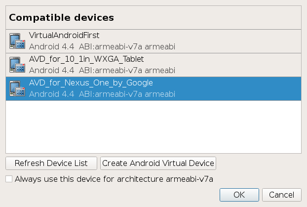
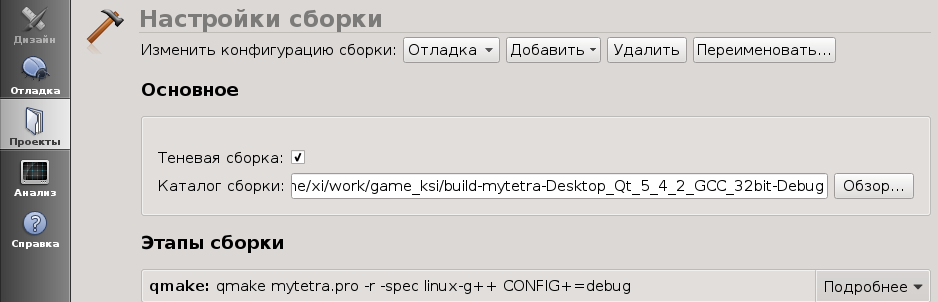

Здесь записываю свою последовательность действий по установке Qt 5.2 и попытке компиляции простой программы под Android.
Эти записульки надо оформить в виде отдельной статьи.
Установка Qt for Android
Вначале нужно установить Qt for Android:
Qt 5.2.0 for Android (Linux 32-bit, 490 MB)
Ссылка на скачивание на сайте qt-project.org:
http://download.qt-project.org/official_releases/qt/5.2/5.2.0/qt-linux-opensource-5.2.0-android-x86-offline.run
Данный файл содержит:
То есть, это полная версия среды разработки Qt Creator 3.0.0 со всеми библиотеками версии 5.2. При инсталляции можно указать отдельный каталог, например /opt/qt_5_2_0_for_android, куда будет проинсталлирован Qt Creator 3.0.0 и библиотеки Qt 5.2, причем они не будут затрагивать уже существующие в системе библиотеки Qt. Инсталлятор представляет собой *.run - файл, которому нужно назначить права на исполнение 755 и запустить его. Запуск инсталлятора можно делать от обычного пользователя, главное чтобы он имел право писать в каталог назначения (в нашем случае /opt/qt_5_2_0_for_android).
Установка Android SDK и Android NDK
Несмотря на своё название, установленный Qt 5.2 for Android будет неспособен собирать проекты под платформу Android. Для того, чтобы заработала сборка под Android, нужно установить Android SDK и Android NDK.
Данные пакеты нужно брать с сайта:
http://developer.android.com/sdk/index.html
На этом сайте, на странице с Android SDK, предлагается к скачиванию два варианта SDK:
1. ADT Bundle (Android Developer Tools) (размер ~500Mb) - пакет, содержащий
2. SDK Tools Only (размер ~100Мв) - пакет, содержащий только
Оба варианта представляют из себя *.zip - архив. Совершенно непонятно, что из всего этого барахла нам действительно пригодится, поэтому качаем ADT Bundle и оттуда будем распаковывать то, что нам потребуется. На странице скачивания нам скажут, что после установки больше не будет необходимости скачивать более новые версии Android SDK, вместо этого для обновления следует пользоваться программой SDK Manager, которая идет в комплекте.
Внутри ZIP-архива с ADT Bundle находятся два подкаталога - eclipse и sdk. Каталог eclipse нам ненужен, потому что у нас уже есть среда разработки Qt Creator. А каталог sdk следует распаковать куда-нибудь в каталог /opt, например /opt/android_sdk.
Уточнение. На момент написания статьи я качал версию ADT Bundle 20131030. В результате в каталоге /opt/android_sdk должны лежать следующие директории:
$ cd /opt/android_sdk
$ ls -lF | sort
drwxr-x--- 3 xi xi 4096 окт 30 14:24 build-tools/
drwxr-x--- 3 xi xi 4096 окт 30 14:25 platforms/
drwxr-x--- 3 xi xi 4096 окт 30 14:26 extras/
drwxr-x--- 3 xi xi 4096 окт 30 14:26 system-images/
drwxr-x--- 4 xi xi 4096 окт 30 14:24 platform-tools/
drwxr-x--- 8 xi xi 4096 окт 30 14:23 tools/
drwxr-xr-x 2 xi xi 4096 янв 1 21:45 add-ons/
Далее качаем Android NDK с того же сайта. На момент написания статьи последняя актуальная версия - r9c. Распаковываем содержимое этого архива (*.bz2) в каталог /opt/android_ndk. В результате в каталоге /opt/android_ndk должны лежать следующие директории и файлы:
$ ls -lF | sort
drwxr-xr-x 13 xi xi 4096 дек 4 07:53 toolchains/
drwxr-xr-x 15 xi xi 4096 окт 28 12:11 platforms/
drwxr-xr-x 18 xi xi 4096 окт 29 11:04 samples/
drwxr-xr-x 6 xi xi 4096 авг 21 2012 sources/
drwxr-xr-x 6 xi xi 4096 дек 4 07:52 build/
drwxr-xr-x 7 xi xi 4096 дек 4 07:53 prebuilt/
drwxr-xr-x 8 xi xi 4096 окт 28 12:11 docs/
drwxr-xr-x 8 xi xi 4096 окт 28 12:11 tests/
-rw-r--r-- 1 xi xi 1306 авг 21 2012 GNUmakefile
-rw-r--r-- 1 xi xi 1360 авг 21 2012 README.TXT
-rw-r--r-- 1 xi xi 201 авг 21 2012 documentation.html
-rw-r--r-- 1 xi xi 292 авг 5 11:14 ndk-build.cmd
-rw-r--r-- 1 xi xi 294 дек 3 06:58 ndk-gdb-py.cmd
-rw-r--r-- 1 xi xi 4 дек 4 07:52 RELEASE.TXT
-rw-r--r-- 1 xi xi 856 авг 8 01:20 find-win-host.cmd
-rwxr-xr-x 1 xi xi 1127 авг 5 11:14 remove-windows-symlink.sh*
-rwxr-xr-x 1 xi xi 1674 сен 10 2012 ndk-which*
-rwxr-xr-x 1 xi xi 25349 ноя 19 05:40 ndk-gdb*
-rwxr-xr-x 1 xi xi 33460 авг 13 07:32 ndk-gdb.py*
-rwxr-xr-x 1 xi xi 355 ноя 13 11:40 ndk-gdb-py*
-rwxr-xr-x 1 xi xi 37012 авг 30 16:59 ndk-depends*
-rwxr-xr-x 1 xi xi 826396 ноя 26 10:32 ndk-stack*
-rwxr-xr-x 1 xi xi 9820 ноя 13 11:40 ndk-build*
Установка Java JDK
Помимо всего прочего нам понадобится Java JDK. Java используется при запуске эмулятора Андроид-устройств. По сути, эмулятор Android весь написан на Java, поэтому без Java нам не обойтись. У меня уже была установлена Java (даже несколько штук), Qt Creator нашел Java JDK в каталоге:
/usr/lib/jvm/java-6-openjdk-i386
Не знаю, имеет ли значение, используется ли фирменная Java от Oracle или необходима OpenSource реализация. В моем случае работает OpenJDK.
Установка ANT
При сборке проекта под Андроид, помимо всего прочего, используется система сборки ANT, написанная на Java. Можно рассматривать ANT как некий аналог системы сборки make. Для того чтобы шла компиляция проекта, необходимо, чтобы ANT была установлена в системе. Во многих Linux-дистрибутивах (например. в Debian Squeeze) этот пакет присутсвует в репозитарии. Он так и называется - ant. Устанавливаем его.
Конфигурирование Qt Creator 3.0.0
После того, как установлены:
можно приступать к запуску и настройке Qt Creator 3.0.0.
Запускаем Qt Creator, нажимаем Tools - Options..., выбираем раздел Android. Указываем все наши пути:
В этом же окне возможно появление предупреждающего сообщения:
Qt version for architecture mips is missing.
Нас оно не должно волновать: большинство устройств на Android имеет микропроцессор с архитектурой ARM. Тратить время на конфигурирование архитектуры MIPS мы не будем.
Далее необходимо в том же окне нажать кнопку Start Android AVD Manager. Откроется вот такое окно (изначально список будет пустым):

AVD означает Android Virtual Device. По сути, это окно со списком виртуальных Android-машин, запускаемых в эмуляторе. На этих машинах мы будем производить тестирование и отладку нашей программы.
На закладке Device Definition присутсвует набор готовых образов Android-устройств. Можно создать AVD-образ с параметрами реально существующего устройства:

Наша задача - создать на вкладке Android Virtual Device пару-тройку устройств, в которыхъ мы будем пытаться запустить Qt программу. Я сделал себе три устройства. Два на основе пресетов с вкладки Device Definition, одно - просто нажав кнопку New..., и задав параметры, так сказать, "с нуля".
Обратите внимание, что мы создаем устройство для CPU/ABI с архитектурой armeabi-v7a. Запомним этот факт, нам он пригодится в дальнейшем конфигурировании.
Теперь нам осталось проверить, запускается ли эмулятор Андроида. Для этого в окне Options - Android выбираем созданное нами устройство и нажимаем кнопку Start. Вот какое окно откроется для Nexus One:

Запуск будет очень медленным. У меня на Core2Duo E8400 3.0GHz этот эмулятор, написанный на Java, запускается около 3-х минут. Но, как минимум, он работает.
Создание и конфигурирование своего Qt проекта
Далее создаем Qt-проект. Нажимаем File - New File or Project. В качестве типа проекта выбираем Qt Widget Application. Да-да! Qt 5.2 способен компилировать под Android классические Qt-приложения, а не только Qt quick.

Создаем проект со стандартным окном MainWindow. После создания проекта выбираем в дереве проекта MainWindow.ui, и набрасываем форму главного окна:

Закрываем MainWindow.ui крестиком в правом верхнем углу.
Далее нам нужно скомпилировать наш проект. Но вначале нам нужно указать как и под какую платформу должна идти компиляция. Ведь по-умолчанию компиляция будет идти просто под Linux.
Нажимаем кнопку Project:

Нажимаем выпадающий список Add Kit, и выбираем строку Android for armeabi-v7a. Помните, мы запоминали, какая платформа у нашего образа виртуального устройства? Именно под эту платформу и нужно делать компиляцию, имначе будет ошибка. После добавления целевой платформы компиляции, все ее настройки сразу появятся на экране:

Строка Build directory, возможно, будет выделена красным цветом. Это означает всего лишь, что такой директории нет. Но она будет создана в момент компиляции, так что обращать на это внимания не стоит.
Далее нажимаем кнопку Manage Kits... и в открывшемся окне указываем платформу, под которую будет по-умолчанию идти компиляция. Для этого надо выбрать строку Android for armeabi-v7a и нажать кнопку Make Default:

Далее нажимаем Build - Rebuild Project "Имя_нашего_проекта".
Если компиляция прошла удачно (смотрим вкладку Compile Output внизу экрана), то запускаем наше приложение в эмуляторе, нажав Build - Run. Система спросит, в какой виртуальной машине произвести запуск. Выбираем машину, нажимаем OK:

И будет запущен эмулятор андроида с нашей программой. Повторюсь, что запуск будет очень долгим. В какой-то момент может показаться, что компьютер ничего не делает. Но это не так. Рано или поздно, эмулятор будет запущен. Вначале в эмуляторе будет переливаться надпись ANDROID, а через пару минут запустится приложение. Если до этого вы выключали эмулятор кнопкой питания, возможно вы увидите экран блокировки с замочком. Разблокируйте экран, и сразу запустится ваше приложение. Выглядит это так:

Видно, что форма кривовата. Концов длинных строк не видно. Возможно, это проблема эмулятора, так как на реальном устройстве формы выглядят правильно.
Все! У нас есть Qt-программа, которая работает на OS Android!
Для того, чтобы запустить программу на реальном устройстве, надо найти ее *.apk-файл. Он был создан в момент компиляции, и находится в директории проекта, в поддиректории /android-build/bin. Директорию проекта можно узнать на вкладке "Проекты", поле "Каталог сборки":

Файл APK надо скопировать на устройство, запустить его через файл-менеджер. Программа будет установлена и запущена. В списке программ она будет иметь значек с зеленым роботом и иметь имя, заданное в названии проекта.
Либо, можно залить программу на устройство в режиме отладки. Как это сделать, напишу позже.